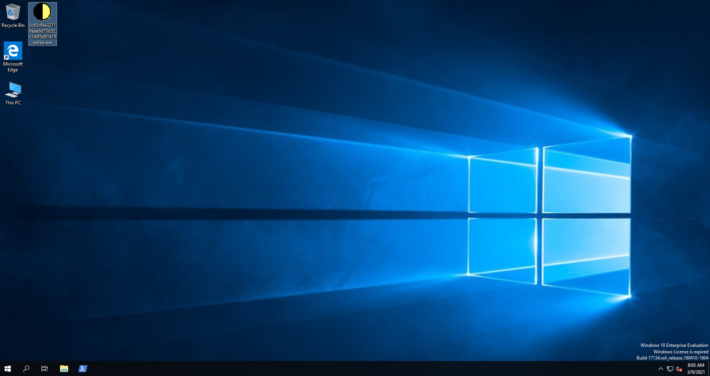
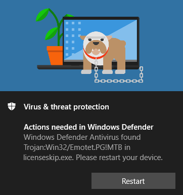
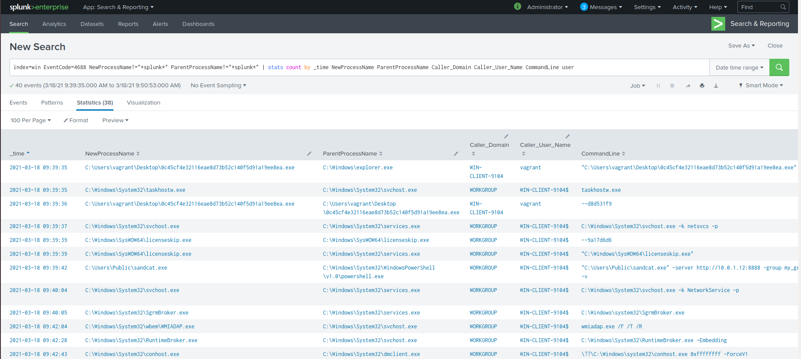
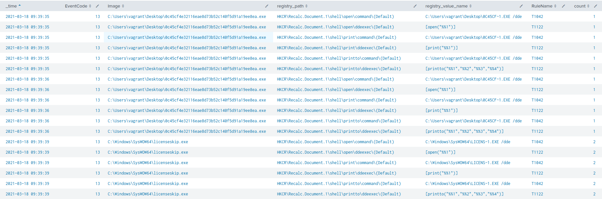
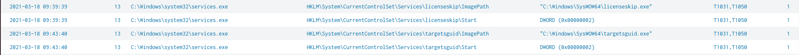

Welcome to post number one!
Earlier this year the Emotet botnet was taken down, so the IOCs generated by this analysis are not increadibly relavent. I however have been wanting to play around with Splunk's Attack Range for a while now and also wanted to look into Emotet a little more given how prevelant it was last year.
In this post I will talk about my experience setting up Attack Range, running some Emotet malware in the environment and then create some Splunk searches to analyse the excecution. I am going to end off with turning the analysis into Sigma rules which could be ingested into different SIEM tools.
Attack Range is a project created by a couple of awesome researchers located on GitHub. It is capable of spinning up a lab environment in the cloud or locally, with very little effort. At the time of writting this it includes a Windows domain controller, Windows server, Windows workstation, Kali machine, Splunk and a Phantom server. Atomic Red Team and Caldera are also included to run automated attacks against the environment. This all creates a very slick playground for security research 😎.
Attack Range Spin Up
I decided to use the local Attack Range as I have a capable machine and also didn't want to spend any money on cloud infrustructure. I am currently working on a Windows machine and it is recommended to either use Ubuntu or MacOS as the host. I don't want to duel boot my current laptop due to drawbacks I have experienced in the past with duel booting, so wanted to run everything in VirtualBox or VMware. I usually prefer VirtualBox over VMware Player, so gave that a shot first. I gave up after a few hours as the nested virtualization within VirtualBox was not working. The issue I was having was basically the same as this. I did fiddle with Device Guard and Windows Hypervisor, but no cigar, so I decided to turn to VMware Player.
The bash script here takes care of almost everything. I also used this article to decide on VM specs. The article mentioned issues with the Ubuntu package for Vagrant, but I did not experience any issues with it. I also don't have enough CPU's to match the spec from that article, but that has also not been a problem yet. In a nut shell these are the steps I followed:
- Install VMware Player on Windows 10 host
- Create Ubuntu 18.04 VM with the following specs:
- - 16GB RAM
- - 150GB disk space
- - Virtualization enabled
- - 6 CPU Cores
- Follow the instructions here
- For my testing I only needed a Windows machine and Splunk server, so disabled the Windows domain controller environment in attack_range_local.conf.
- run: python attack_range_local.py -a build
- ☕ 🎮 🎶
Emotet Time
If you would like to read about the history of Emotet I would unbiasedly recommend my buddy's post 😉. For a deep dive I enjoyed Bromium's report.
In this analysis I am trying to generate IOC's which can be used to detect the varient of Emotet being looked at. I use only the Sysmon logs to do this. There are also Windows event and Powershell logs forwarded to Splunk, but I did not find much worth writing about from these sources.
The Emotet malware excecuted was found here. I randomly chose an excecutable in this file (0c45cf4e32116eae8d73b52c140f5d91a19ee8ea), this is the VirusTotal page for this file. After disabling Windows Defender and firewalls the file was copied onto the Windows 10 machine.
 Emotet malware copied onto Windows host and renamed to "0c45cf4e32116eae8d73b52c140f5d91a19ee8ea.exe"After running the excecutable a Windows Defender pop up appears:
 Windows Defender pop upSplunk Logs
Because the analysis results for this file exist on VirusTotal, I will try look for some indicators which match findings from there. In particular I am looking at IP's contacted, registry key changes, process and files created and shell commands excecuted.
To try be systematic I will identify the following using the Splunk logs collected:
- Find which processes started as a result of excecuting the malware
- Check which registry keys where changed
- Search for files created
- Look for outbound connections
I am not expecting this malware to excecute as it did during the VT analysis due to the takedown, but we should still see a lot of local changes and an outbound connection to a malicious URL.
Processes Started
Splunk search:index=win EventCode=4688 NewProcessName!="*splunk*" ParentProcessName!="*splunk*" | stats count by _time NewProcessName ParentProcessName Caller_Domain Caller_User_Name CommandLine user
The code 4688 is the event code for the creation of a new process. The results from this search don't immediately give away the series of events, but there are some clues given here. We can see that some of the processes listed have a similar CommandLine field (starting with "--").
 Splunk search for new processes. Processes involving Splunk have been excluded and the time range has been set to start at the time of malware excecution.If we use this information we can guess the following process tree:
C:\Users\vagrant\Desktop\0c45cf4e32116eae8d73b52c140f5d91a19ee8ea.exe
- ↳ C:\Windows\SysWOW64\licenseskip.exe
- ↳ C:\Windows\SysWOW64\yYXCAJq.exe
- ↳ C:\Windows\SysWOW64\targetsguid.exe
I wanted to check what these files were and if they were found on VirusTotal. I used the event code of 1 as it contains file hashes in one of the log fields. The following search returned the MD5's for the files:
index=win EventCode=1 | stats count by process_name MD5
This showed that 0c45cf4e32116eae8d73b52c140f5d91a19ee8ea.exe and licenseskip.exe shared the MD5: F4D1470AF3A7D82560B38558B132D468, while yYXCAJq.exe and targetsguid.exe had the MD5 hash of 4AB3923D3437AC180673760F4D4F5189. To confirm that licenseskip.exe created the next two processes listed in the process tree above event code 11 is used. The link to that event code shows that this is a common event code seen during malware drops. Running the following search shows that licenseskip.exe dropped yYXCAJq.exe and in turn targetsguid.exe:
index=win EventCode=11 Image="C:\\Windows\\SysWOW64\\licenseskip.exe" | table _time Image TargetFilename EventDescription
The results of that search confirm that targetsguid.exe was dropped by licenseskip.exe.
Registry Key Changes
The windows event codes 4657 and 13 can be used to look at registry key changes and additions. All the registry keys seem to have been added by the malware (event code 13). The search used to find this was:
index=win EventCode=13 OR EventCode=4657 | search Image="C:\\Users\\vagrant\\Desktop\\0c45cf4e32116eae8d73b52c140f5d91a19ee8ea.exe" OR Image="C:\\Windows\\SysWOW64\\licenseskip.exe" | stats count by _time registry_path registry_value_name RuleName
Another indicator pops up here, the registry key "Recalc.Document.1", something else which is interesting is the MITRE techniques appear as a field in the results. This is due to the MITRE ATT&CK Framework integration into Enterprise Security (ES). I think correlation between the MITRE techniques and some log sources are automatically configured when ES is installed, which is why we are seeing these techniques. I wanted to see which other registry keys were being set based on a search for the MITRE techniques. These were all the registry keys I could link to the malware based on searching for any RuleName which started with a "T".
 Registry key additions involving 0c45cf4e32116eae8d73b52c140f5d91a19ee8ea.exe and licenseskip.exe  Registry key additions to create persistenceThe MITRE techniques which show up in the above image included T1050 and T1031, these were not found on the Mitre website, but were found here. From that reference T1050 is setting up persistence by creating a new service and T1031 is modifying an existing service but is also related to persistence. This forum explains what is going on. By adding a registry key to HKLM\System\CurrentControlSet\Services\ a new service is being created and by setting HKLM\System\CurrentControlSet\Services\<service name>\Start to 0x00000002 it will ensure that the service is automatically started. So from the results we can see the malware is creating persistence for C:\Windows\SysWOW64\licenseskip.exe and C:\Windows\SysWOW64\targetsguid.exe.
Finding a C2
This was easy to find due to the fact that the Windows machine was newly built and was only making outbound connections to the Splunk server. The search I would share with colleagues though would be (including filters for efficiency):
index=win source="XmlWinEventLog:Microsoft-Windows-Sysmon/Operational" direction=outbound app="C:\\Windows\\SysWOW64\\licenseskip.exe" | table _time app DestinationIp DestinationPort
The IP address 192.241.220.183 and port 8080 are linked to an Emotet C2 on VirusTotal. The connection to this IP and port were successful, but no further communication was made to the address after initial infection. Something interesting to note is that this IP address did not appear in any of the VirusTotal results for the licenseskip.exe and targetsguid.exe files. 🤔
Titbits for Splunk/Cyber beginners
I have used a few Windows event codes in the searches above, but knowing these event codes to find the information mentioned is not necessary. We know that the logs we are looking for are in the win index. Starting from there we could paste in the name of the .exe originally excecuted, this returns a manageable amount of data and we can now look at the fields available for filtering. If there is too much data to handle, I like to duplicate the original search into multiple tabs and then explore the data filtering by adding different fields to the search. This will take longer than knowing or searching for specific event codes, but can also help find juicy information very quickly. In this example we can find the filename licenseskip.exe from the search described, we can then run a similar search for licenseskip.exe. Doing this returns two traffic directions in the direction field and the outbound traffic direction contains only one result. Filtering for this gives the C2 server, in corporate land that kind of information should earn you a firm pat on the back.
Sigma the Findings
Sigma is a standard for sharing SIEM searches between different platforms. It uses YAML files to create searches in a generic format which can then be converted into formats recognized by most SIEM tools and even grep! This makes it an awesome tool for sharing rules in a community or in posts like this. I have created Sigma rules for the findings in this post. To convert this file to searches for a specific SIEM the following command can be run from the Sigma base directory after installing sigmatools:
python3 tools/sigmac -t <SIEM/target name> -c tools/config/generic/sysmon.yml <path to YAML file>emotet_blog.yml
End
If you are still reading this, well done and thank you! I hope you have enjoyed it. If you would like to chat about anything related to the post (or anything else) please reach out on one of the platforms below! I will be checking out BloodHound next, I am interested in what it's excecution looks like in the AttackRange environment. See you soon!